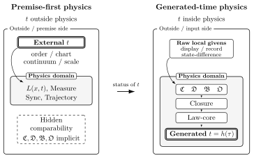
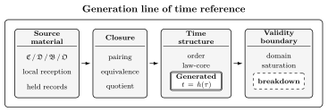

1 Introduction
1.1 Problem Setting
Physics has described motion, change, measurement, and physical law by means of a conventional time variable. Physics has not, however, decomposed the requirements for using that variable into a construction problem for the establishment of time itself. Clocks, records, synchronization, coordinates, spacetime structures, and observational procedures have been introduced, but the conditions under which they jointly establish a single time reference have remained among the premises of physical-law formulation.
Background time in classical mechanics, synchronization and inertial coordinate time in special relativity, Minkowski spacetime, and dynamical spacetime in general relativity have each supported the use of a time variable in a different form[52, 23, 46, 24]. This paper places these uses of time on a single generation pathway as conditions for establishing a time reference—conditions generated from local displays, records, object-state differences, and observer-side information-coupling positions.
The theory constructed along this pathway is called the local-comparison theory of time reference, abbreviated below as LCTR.
The logical architecture of LCTR integrates principles systematized in computer science (CS): type separation; boundaries between inputs, operations, and outputs; dependency order; audit states; failure localization; evidence provenance; and change-impact analysis. It gives these principles mathematical form as a structure governing the establishment of physical time. For each time content, LCTR places its input type, generation conditions, downstream conditions of use, validity domain, minimal failure locations, repair target, and scope of downstream regeneration within a single dependency structure.
In classical descriptions of the world, an object’s mass distribution, center of mass, shape, moments, and other properties are introduced as physical quantities when required. The availability of a common time variable for those objects is instead treated as an already established background. The time values appearing in the equations are therefore used as quantities already present in the world described by the theory, apart from the processes by which something physical is time-stamped, retained in a record, and made comparable.
Changes in the treatment of time between classical and relativistic descriptions have often been understood in terms of differences in scale or theoretical domain. The more basic issue is the stage at which a physical theory takes the availability of a time variable as already established within the world it describes. Classical macroscopic descriptions embed this condition in their idealized descriptions of the world. The availability of a time variable therefore does not appear as a problem and recedes into the background of law formulation.
A theory that treats the availability of a time variable as established states laws and predictions under idealized premises and tests their agreement with experiment. Such a theory does not provide, as one of its own outputs, the extent to which those premises persist in a physical realization or the point at which they fail. The causes of disagreement are consequently distributed among several explanations, leaving the gap between idealized law and physical realization outside the theory.
This paper moves that presupposed part into the theory and formulates the conditions under which time comparison, dynamical description, time representation, and continuous-description approximation are established.
1.2 Constructed Objects and Generation Targets
The objects constructed in this paper are the conditions for establishing a time reference that a physical theory requires in order to state laws using a time variable. From locally received clock-side material, retained record-side material, object-state-side material, and observer-side information-coupling positions, the construction derives the conditions governing time comparison, time representation, dynamical description, time representations used in laws, and the validity domain of continuous-description approximation.
The dynamical content specific to each physical theory is retained as theory-specific input to the generation and audit construction of LCTR. The generation targets of this paper are the conditions under which that theory-specific input is established for use in time comparison, time representation, dynamical description, and time representations used in laws.
1.3 Scope and Generation Targets
The general theory developed in this paper uses locally received material, record-side material, object-state-side material, and observer-side information-coupling positions as top-level input categories. It addresses local constructions that include the comparison rules and realization materials supporting those categories. A construction lies within the scope of this paper when the conditions for establishing a time reference can be constructed from these materials.
The scope of this paper is to describe, along a single generation pathway, the conditions for establishing a time reference, the validity domain in which a time representation can be used, and the location at which a condition fails.
1.4 Central Thesis and Worldview Contrast
The central thesis of this paper is to shift the conventional time variable used in physical law from a primitive premise of law formulation to a law-admissible representation generated from locally received displays, retained records, object-state differences, and information-coupling positions.
This paper proposes four functional responsibilities for generating time without presupposing a time variable, and generates the time variable used in laws by a construction satisfying those responsibilities.
Conventional physical descriptions place the time variable, continuous time, coordinate time, and frequency among the premises used to formulate laws of motion and descriptions of measurement. This paper decomposes, along the generation pathway, the conditions of establishment absorbed into those premises and connects them to comparison closure, the canonical comparison quotient, the observer-time quotient, dynamical description, law-admissible time representations, validity domains, failure locations, and the conditions under which primitive premises fail.
For purposes of exposition, the construction proceeds in the following broad order.
| Locally received displays, records, | |||
| object-state differences, and information-coupling positions | |||
| Comparison closure | |||
| Connection of time representations to dynamical description | |||
| Use of a time variable in laws | |||
| Validity domains and failure conditions |
This central thesis is developed through five claims. First, the task of establishing a time reference is formulated from local displays, records, object-state differences, and observer-side information-coupling positions, without taking external time, a total order over the external world, continuous time, or primitive frequency values as starting points. Second, the paper gives the conditions under which comparison-stage closure generates the canonical comparison quotient, exact operational time structure, representation coordinates, and comparison atlas. Third, it gives the conditions under which dynamical-description operability yields the observer-time quotient, object-state quotient, trajectory relation, canonical observable family, and law-admissible time representation. It further shows that the observer-time law core is generated when the selected law datum satisfies law-description operability. Fourth, it localizes the failure conditions for a time reference, a law-admissible time representation, and the use of a time variable in equations expressing physical laws as failure locations and audit branches associated with the failure of conditions governing comparison, representation, continuous-description approximation, dynamical description, use in laws, and differential formulation. Fifth, it classifies representative physical theories, quantum-gravitational reconstructions, cosmological initial boundaries, extreme-gravity regimes, the problem of observables, the arrow of time, quantum measurement records, microscopic physical processes, spacetime emergence, and cosmological expansion histories by differences in time-establishment burdens, validity domains, failure locations, and audit branches along the same generation pathway.
Figure 1 shows this difference in the order of introduction. The left panel depicts a scheme in which the time variable, continuous time, coordinate time, and frequency are placed among the premises of physical-law formulation. The right panel depicts a scheme in which the conditions for establishing a time reference are constructed from local displays, records, object-state differences, and information-coupling positions.

Formulas in the figure



Formulas in the figure


1.5 Non-Circularity and Input Materials
The construction developed in this paper does not use a time variable, external time, a total order over the external world, continuous time, or primitive frequency values as inputs. The input layer contains displays received locally, retained materials, object-state differences, reception positions grouped on the observer side, source-side realization materials, and local comparison rules. These are the operational materials from which a time reference is established at a later stage.
During input formation, these materials are treated as materials for difference, retention, arrival, and comparison that are available before a time variable has been established. Cycle indices and cycle-count differences are counting materials that are connected to frequency, period, and Hz after a time representation has been established at a later stage. Retained materials, object-state differences, and arrival maps are likewise incorporated into a time reference through the subsequent construction.
This paper separates the operational materials in the input layer from the time representations generated at later stages. This separation permits counting, retention, differences, arrivals, and comparisons to be used as inputs while avoiding the circularity of treating them from the outset as time values, periods, frequencies, time evolution, or time maps.
1.6 Why This Problem Was Difficult to See
This problem was difficult to see because, in formulations that placed the time variable first, the fact that time was being used as a premise had receded into the background in the fields concerned with clocks, records, synchronization, coordinates, observational procedures, and spacetime structures. In formulations that place time first, the establishment, validity, and failure of time are absorbed into the premises required to formulate laws of motion.
In classical mechanics, the conventional time variable is used as a parameter in equations of motion. Relativity brings coordinate time and proper time, comparisons between worldlines, and synchronization procedures to the foreground. Quantum theory foregrounds observational coupling and state identification. Time metrology and GPS foreground the adjustment of multiple clocks, correction records, and the gluing of comparison results. These formulations have addressed the representation, measurement, synchronization, coordinatization, and geometrization of time, together with its relation to observation, but have not formulated, as a single construction condition, the conditions under which a time reference itself is established.
The unconstructed part also remains in classical definitions of time. In Book IV, Chapter 11 of the Physics, Aristotle neither identified time with change nor separated it from change. He connected the continuity of magnitude, change, and time to before and after and, through distinguishing and counting two nows, defined time as the number of change with respect to before and after[4]. This was a historical achievement that connected the distinction from change, before and after, the now, perception, demarcation, counting, and continuity to the definition of time. It nevertheless used before and after, the now, change, perception, and number before the generation of time; the rules for generating them from local operational materials, record retention, comparison closure, information-coupling positions, law-admissible time representations, validity domains, and failure locations remained unconstructed.
The factors that have obscured the need to establish a time reference take different forms in the background time of Newtonian mechanics, Einstein synchronization in special relativity, Minkowski spacetime, and the spacetime structure of general relativity[52, 23, 46, 24]. This paper moves time from a premise of these descriptions to a consequence of the generation conditions at the comparison, representation, dynamical-description, and law-representation stages.
The high-precision success of relativistic calculations established clock readings, synchronization procedures, coordinate time, proper time, and comparisons between worldlines as correspondence structures that can be handled stably within physical law. This establishment obscured the fact that time was being used as a premise in spacetime structure, synchronization conventions, proper-time representations, and clock readings. This paper places the construction conditions for establishing the time reference presupposed in these correspondence structures along a single generation pathway.
In Chapter 5 of Volume I of The Feynman Lectures on Physics, Feynman discussed the problem of giving a satisfactory definition of time and called on his readers to acknowledge that time is probably among the things that “we,” including himself, cannot define in dictionary terms. He then shifted the discussion to how time is measured in physics[27]. This passage is direct textbook testimony that, even while a time variable was used in physical laws, the conditions for establishing a time reference itself remained an object of definition. Even after this frank statement, physics did not treat the undefinedness of time itself as a construction problem, and the fact that time was being used as a premise remained in the background across clocks, synchronization, coordinates, spacetime structure, metrology, and observational procedures. This paper treats the conditions for establishing the time presupposed in those treatments as a construction problem prior to measurement procedures and reconstructs them as the conditions under which a time reference and a law-admissible time representation are generated from local displays, records, object-state differences, and observer-side information-coupling positions.
Definition 1.1 (Difficulty of Defining Time).
The difficulty of defining time is the state in which physical laws use a time variable while no satisfactory definition of time itself is supplied as the ground for that use. Feynman’s statement is direct textbook testimony to this state. Under the difficulty of defining time, the use of time as a premise recedes into the background in descriptions of clocks, measurement, synchronization, coordinate time, proper time, spacetime structure, metrology, and observational procedures, while the conditions for establishing a time reference remain unconstructed. This paper takes these conditions of establishment as objects of construction: the conditions for using the time variable that appears in physical laws.
LCTR answers this difficulty of defining time not by adding a lexical meaning of time, but by constructing the conditions of establishment under which physical time can be used.
Putting the conventional time variable first pushes the conditions for establishing a time reference outside law formulation. In that order, the properties of laws of motion are examined with respect to that time variable, while the conditions under which the time variable itself becomes available remain among the premises. This paper treats those remaining conditions as the construction problem for the establishment of time.
The historical significance of this paper lies in shifting the conventional time variable from a premise of physical law to a consequence. Physics has described motion, change, measurement, and laws in terms of time, but has not decomposed the conditions required to establish a time reference itself into the construction materials for establishing time. This paper brings the part left outside into the theory and places the conditions for generating a time variable, the audit conditions for the use of time, and the primitive-premise failure conditions along the same theoretical pathway. Because the conditions for establishing a time variable are common premises prior to the formulation of physical laws, shifting them from premises to objects of construction revises the starting point of physical description. Its scope extends to the natural sciences built on physics and to the descriptive foundations of science and engineering that use physical laws. Problems conventionally treated as distinct mysteries of time stood as mysteries insofar as they presupposed an ungenerated time variable. Moving the time variable from a premise of physical law to an outcome of generation removes the basis on which these problems stood as mysteries and reclassifies them as conditions for establishing a time reference, validity domains, failure locations, and subjects of audit reports. This paper examines time use in the 72 audited sources spanning ancient definitions of time, modern theories and experiments, metrological standards, and engineering materials against a common criterion: whether time content and the structure grounding its establishment are generated before their use in laws.
1.7 Distinction from Existing Theories
In existing theories, clock synchronization, proper time, relational time, quantum-theoretical reconstruction of time, time metrology, and operationalism have, in their respective ways, addressed the measurement, synchronization, geometrization, relationalization, and standardization of time, together with its connection to observation. By contrast, LCTR formulates them as a single construction problem in which the conditions for establishing a time reference are determined from local displays, records, object-state differences, and information-coupling positions, thereby shifting the time variable from a premise of physical law to an outcome of generation.
The existing theories referred to here include operationalism, the problem of time in quantum gravity, external-time-free quantum-theoretical descriptions of time, relational observables, and time-metrology standards[12, 42, 39, 53, 62, 14]. This paper places the partial objects addressed by these approaches along a single generation pathway proceeding through time-reference formation, law-admissible time representations, validity domains, and failure locations.
The reduction meant here maps the use of time addressed by existing theories to the construction stages through which the time variable is shifted from a premise of physical law to a consequence, while retaining the dynamical content specific to each theory as theory-specific input to the generation and audit construction of LCTR. For each representative scheme, the correspondence among the dynamical content of the existing theory, the use of time, the conditions of establishment, and the conditions of failure is fixed.
1.8 Main Results
This paper has five main results.
First, the task of establishing a time reference is formulated from local displays, records, object-state differences, and observer-side information-coupling positions, without taking external time, a total order over the external world, continuous time, or primitive frequency values as starting points.
Second, the paper shows that comparison-stage closure is the condition under which the canonical comparison quotient, exact operational time structure, local chart system, representation coordinates, and comparison atlas are generated. On this basis, a conventional time parameter is fixed as an order-preserving representation on the exact operational time structure thus generated.
This generation determines, prior to the use of a time variable, what may be treated as the same time content, what may be compared as before and after, and under what conditions a single order and numerical representation may be used. It also separates the establishment of the generated temporal structure from the choice of its coordinate representation.
Third, the paper shows that dynamical-description operability is the condition under which the observer-time quotient, object-state quotient, trajectory relation, graph trajectory, canonical observable family, and law-admissible time representation are generated. The observer-time law core is further generated when the selected law datum satisfies law-description operability. The generated time representation is used in the law on the common valid time domain of this law core.
Fourth, for each failure of a time reference or law-admissible time representation, the paper identifies the failure location as the point at which an establishment condition governing comparison, representation, continuous-description approximation, dynamical description, use in laws, or differential formulation ceases to hold. It further treats the use of a time variable in equations expressing physical laws as an audit branch connecting that use to establishment conditions and primitive-premise failure conditions along the generation pathway. On this basis, the range in which use of the time variable is established, its failure boundary, and its reason for failure are classified by determining which establishment conditions along the generation pathway remain satisfied, how far they remain so, and where they cease to hold. This classification turns the divergence between an idealized law and its physical realization into a theoretical output determined by the establishment conditions and failure locations governing use of the time variable.
This classification gives the conditions under which continuity and differentiation may be used. It distinguishes cases in which description by differential equations is valid from those in which it loses descriptive adequacy by the range over which those conditions are satisfied and by their failure locations. Applying the same conditions and failure locations to both theoretical description and engineering implementation connects them along the same audit pathway.
LCTR changes the stage of establishment of classical continuous time from a primitive premise of law description to a generated approximation representation that may be used within the range in which its physical conditions of establishment hold.
For each minimal failure location in each series, the paper identifies the associated condition or input. When repair of that condition succeeds, downstream results are regenerated or recomputed from the repaired input in dependency order. When the condition does not hold over the entire domain, the domain of use of the results is restricted to the region in which the condition holds. For existing forms that include continuity and differentiation, qualification for use, domains of establishment, causes of failure, and repair order are thereby returned as a single audit output.
Accepting a primitive time input as an already established time input can move the generation or establishment conditions required for that use into the background, beyond the generation and evaluation boundary preceding use in laws. If independent evidence establishes actual failure of the same condition and a dependency path from its failure location reaches a downstream result, that result loses its qualification for use in the evaluation domain and is regenerated or recomputed from repaired input.
Physical carriers, records, communication, finite resolution, and evidence provenance constitute audit inputs that determine the domains of establishment and failure locations of a time variable. The responsibility for establishing a theory that uses a time variable therefore includes presenting its physical realization and its usable range.
Fifth, the paper reduces Newtonian mechanics, classical mechanics, special relativity, general relativity, time metrology, GPS, quantum-gravitational reconstructions, cosmological initial boundaries, extreme-gravity regimes, the problem of observables, the arrow of time, quantum measurement records, microscopic physical processes, spacetime emergence, and cosmological expansion histories to realization or connection domains along the same generation pathway. In this reduction, the use of time in each theory is connected to the conditions for establishing a time reference, validity domains, failure locations, and audit branches.
For physical quantities that include a time dimension or are defined using time, the paper retains their physical relations as theory-specific input to the generation and audit construction of LCTR and uses time-dependent representations within domains of establishment only after the required time content has been generated. This order connects the quantification domains of claims about the constancy, invariance, rate, lifetime, linewidth, or frequency of each quantity to the generation conditions for time content. The construction that retains existing physical relations as such theory-specific input, localizes failure conditions and their downstream effects, and performs repair or domain-of-use restriction provides a result-preserving re-grounding: it moves the physical grounds of retainable existing results from primitive time premises to a generated grounding structure.
The standard formulations of special and general relativity directly yield differences in clock readings, differences in coordinate time, differences in proper time along worldlines, metric structures, and the correspondences among them[23, 46, 24]. Standard textbooks and public expositions, by contrast, connect these differences to expressions according to which time itself slows, time expands or contracts, or physical processes as a whole slow together with clocks[27, 68, 61, 47, 51, 26, 58]. These sources do not define the type, state space, or deformation law of an independent time entity, yet they identify what counts as time, proper time, a clock, a rate of time, or spacetime before the construction of a time reference.
This paper does not presuppose time, proper time, or a rate of time as a primitive object. It generates a time reference and law-admissible time representations from local operational materials and determines relativistic clock differences as comparison differences among generated law-admissible time representations corresponding to multiple observers or worldlines. The fundamental reason existing theories do not give the conditions for establishing a time reference and the rules for generating a time representation is therefore not limited to an explicit assumption of an independent time entity; it also lies in identifying time, proper time, or a rate of time before constructing the time reference. A claim that expansion or contraction of an independent time entity is a literal physical mechanism additionally requires the type and identity conditions of that entity, its state space, deformation map, deformation magnitude, evolution law, and observational correspondence to clock differences. Even when no independent time entity is claimed, calling a generated comparison difference an expansion or contraction of time does not generate time itself.
Statements that time does not exist and statements that attribute expansion, contraction, slowing, acceleration, flow, or deformation to time itself are assessed by matching the type and domain of application of the time content to which each statement refers. If they refer to the same type of time content in the same domain of application, a statement denying the existence of an object and a statement attributing physical properties to that object are incompatible. If they refer to different objects or domains of application, the transition must be stated; a transition to differences in clock indications, differences in clock rates, differences in proper time, coordinate differences, or other relational quantities does not entail a change in a property of “time itself” independent of physical carriers.
Comparison differences established on clocks, oscillators, signals, records, or other physical carriers, and explanations attributing those differences to properties of time itself independent of the carriers, have different objects and evidence. Results of measurement, prediction, model fit, or mathematical consistency hold for the objects, predicates, conditions, and domains of application directly supported by their evidence. A claim transferring such results to a different object, predicate, evidence type, establishment condition, or domain of application requires independent evidence or a valid derivation supporting that transfer.
For quantum-gravitational reconstructions, cosmological initial boundaries, extreme-gravity regimes, the problem of observables, the arrow of time, quantum measurement records, spacetime emergence, and cosmological expansion histories, the paper gives the conditions under which a time representation capable of bearing laws is generated from a construction without external time and localizes the point at which those conditions fail along the generation pathway.
Through this unified generation pathway, LCTR distinguishes local proper time from a time representation that bears physical laws as a whole, and treats Lorentz transformations as relations between time representations and spatial representations. It further distinguishes the arrow of time, statements of the nonexistence or emergence of time, and the problem of time in quantum gravity according to which problem of establishment each bears among the generation, representation, and orientation of time content and qualification for its use within laws.
A construction that presupposes primitive time identifies the time variable used in laws before generating it and places its physical establishment outside the object of explanation. It thereby relinquishes the responsibility to generate, from physical materials and operations without dependence on ungenerated temporal quantities, a time representation usable in law formulation. This paper subjects the use of time across the 72 audited sources to a unified audit under this generation responsibility and shows that the existing theories covered by the audit do not fulfill it. The cross-source results of this unified audit are as follows. Under the complete assessment, generated time content occurs in none of the 72 sources, and all source-specific time content remains as primitive time roots. Under the local-reach assessment augmented by formal-evidence environments, local reach is recognized in only ten sources, and primitive time roots remain in all ten. The remaining 62 sources contain no time content reached under the local-reach assessment. The construction developed in this paper generates a time reference and law-admissible time representations from local physical materials and fulfills the responsibility to generate the time variable used in physical laws.
The accompanying formal-verification assets contain Lean and Isabelle formalizations of the mathematical definitions and all proof obligations in Sections 2–6, a componentwise correspondence table for types, quantification, premises, domains, all conclusions, and dependencies in the text and both formalizations, verification results from both systems, and results from rechecking Lean proofs with nanoda and con-leche. They also include machine-readable representations of the partial output map of a law-candidate relation in MMT, OpenMath, and Content MathML; results of applicable SMT, symbolic-computation, unit-and-dimension, counterexample, and boundary-case checks; a pinned verification environment; and rerun instructions. For each proof obligation, the assets include the results of comparing the text with the proof bodies, definitions used, theorem dependencies, and local assumptions in both formalizations.
1.9 Paper Organization
This paper proceeds as follows. First, it decomposes the conditions under which a time variable used in physical laws is established into time-value carriers, retention objects, comparison operations, law-connection targets, and prior-use dependency locations. Next, it specifies, from locally available physical materials, the local time-establishment task, four requirements, the base role-type set, local operational components, and families of object-specified role-instance bundles. It then uses these roles to form the inputs required for the comparison construction. The paper next specifies the comparison-closure conditions for local comparison and gives a construction that proceeds from that closure to the canonical comparison quotient, exact operational time structure, representation coordinates, and comparison atlas. It then connects the objects obtained by comparison to dynamical description and formulates the conditions under which the observer-time quotient, object-state quotient, trajectory relation, canonical observable family, law-admissible time representation, and observer-time law core are generated. The paper further classifies how far the construction remains valid and where it fails, organizing validity domains, failure boundaries, and structural burdens as auditable objects. Finally, it places representative physical theories, classical multi-object descriptions, quantum-gravitational reconstructions, cosmological initial boundaries, extreme-gravity regimes, the problem of observables, the arrow of time, quantum measurement records, spacetime emergence, and cosmological expansion histories along the same generation pathway and determines the establishment and failure conditions governing the shift of the time variable from a premise of physical law to a generated law-admissible time representation.